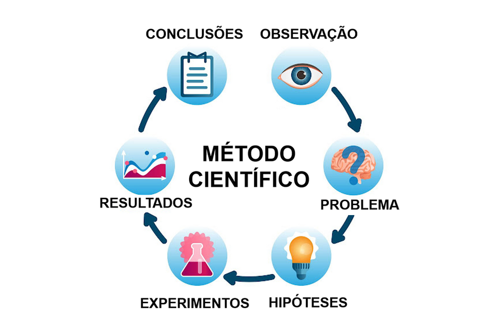
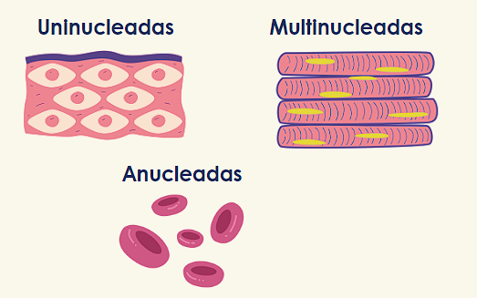

Biologia
Método Científico
Conjunto de normas/regras divididas em etapas que devem ser seguidas para que se desenvolva uma pesquisa.
Observação;
Questionamento;
Formulação de hipótese;
Experimentos;
Resultados;
Conclusão.

Núcleo celular e divisões celulares
O núcleo celular é uma estrutura central em células eucarióticas que contém o material genético, incluindo cromossomos. Ele controla as atividades celulares e é essencial para a hereditariedade.

A divisão celular refere-se ao processo pelo qual uma célula se divide para formar duas células filhas. A mitose é o tipo de divisão celular que resulta em células geneticamente idênticas, enquanto a meiose ocorre em células germinativas e resulta em células com metade do número de cromossomos, necessárias para a reprodução sexual. Ambos os processos desempenham papéis cruciais no crescimento, desenvolvimento e manutenção dos organismos.
Lipídios
Óleo: geralmente vegetal e líquido.
Gordura: geralmente animal e sólido.
Enzimas
As enzimas são proteínas especiais que tem a função de catalisar reações químicas.
Acelaram a quebra de moléculas.
Amilase - amido
Lactase - lactose
Maltase - malte
Catalase - água oxigenada
Lipase - lipídions
Protease - proteína
Divisão celular
A divisão ocorre depois da interfase.
G1:Crescimento
S: Duplicação do DNA
G2: Preparação para divisão
Mitose
Uma célula se divide em duas sem alterar a quantidade de material genético.
Crescimento, regeneração

A citocinese é o processo de separação física das células-filhas.
Artrópodes
São animais invertebrados que possuem pernas articuladas.
Peixes
Condrictes
tubarões, arraias e quimeras.
Esqueleto cartilaginoso
Boca na porção ventral
Osteíctes
cavalo-marinho, sardinha e todos os outros.
Esqueleto ósseo
Boca na extremidade do corpo
Mamíferos
Presença de pelos.
Glândulas mamárias e sudoríparas.
Diafragma em eutérios.
Dentes diferenciados.
**Procurar por Marsupiais, eutérios e monotremados**
Relações Ecológicas
Parasitismo: relação em que uma espécie necessita de outra e causa prejuízo ao seu hospedeiro.
Grupos vegetais
Briófitas
Gimnospermas
Pteridófitas
Angiospermas
Angiospermas
Plantas que apresentam flores e frutos.
Para ser considerado verdadeiro, o fruto deve ser proveniente do ovário. Se for originário de qualquer outra parte, será um pseudofruto.